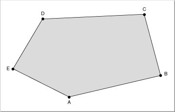

About Style Objects
A style object (or, more briefly, a style) is a type of QuickDraw 3D object that determines some of the basic characteristics of the renderer used to draw the geometric objects in a scene. A style is of typeTQ3StyleObject, which is a subclass of a shape object.You can apply a style to a model by creating a style object and then submitting it to the model. QuickDraw 3D provides functions that allow both retained and immediate style submitting. Alternatively, you can create a style object and then add it to a group. Then, when the group is submitted for rendering, the style is applied to all objects in the group (if it's an ordered display group) or to all objects in the group following the style (if it's a display group).
QuickDraw 3D defines these types of styles that affect the rendering or picking of a scene:
- Note
- See the chapter "Group Objects" for complete information on how styles are applied to the objects in a group.

Unlike attributes, which define characteristics of the appearances of individual surfaces and can be applied to only part of a model, styles define characteristics of a renderer and are generally (but not always) applied to a model as a whole.
- backfacing styles
- interpolation styles
- fill styles
- highlight styles
- subdivision styles
- orientation styles
- shadow-receiving styles
- picking ID styles
- picking parts styles
If you apply a style to an object and then apply a different style of the same type to that object, the style applied second replaces the style applied first.
- IMPORTANT
- Some renderers might not support all types of styles, and some renderers might not be able to apply a given style to all geometric objects. For example, not all renderers can draw shadows; such renderers therefore ignore the shadow-receiving style.
Backfacing Styles
A model's backfacing style determines whether or not a renderer draws shapes (typically polygons) that face away from a view's camera. QuickDraw 3D defines constants for the backfacing styles that are currently available.typedef enum TQ3BackfacingStyle { kQ3BackfacingStyleBoth, kQ3BackfacingStyleRemove, kQ3BackfacingStyleFlip } TQ3BackfacingStyle;The default value,kQ3BackfacingStyleBoth, specifies that the renderer should draw shapes that face either toward or away from the camera. The backfacing shapes may be illuminated only dimly or not at all, because their face normals point away from the camera.The constant
kQ3BackfacingStyleRemovespecifies that the renderer should not draw or otherwise process shapes that face away from the camera. (This process is called backface culling.) This rendering style is likely to be significantly faster than the other two backfacing styles (because up to half the shapes are not rendered) but can cause holes to appear in visible backfacing objects.The constant
- Note
- An object that faces away from the camera might still be visible. Accordingly, backface culling is not the same as hidden surface removal.
kQ3BackfacingStyleFlipspecifies that the renderer should draw shapes that face toward or away from the camera. The face normals of backfacing shapes are inverted so that they face toward the camera.Interpolation Styles
A model's interpolation style determines the method of interpolation a renderer uses when applying lighting or other shading effects to a surface. QuickDraw 3D defines constants for the interpolation styles that are currently available.typedef enum TQ3InterpolationStyle { kQ3InterpolationStyleNone, kQ3InterpolationStyleVertex, kQ3InterpolationStylePixel } TQ3InterpolationStyle;The constantkQ3InterpolationStyleNonespecifies that no interpolation is to occur. When a renderer applies an effect (such as illumination) to a surface, it calculates a single intensity value for an entire polygon. This style results in a model's surfaces having a faceted appearance.To render surfaces smoothly, you can specify one of two interpolation styles. The constant
kQ3InterpolationStyleVertexspecifies that the renderer is to interpolate values linearly across a polygon, using the values at the vertices. The constantkQ3InterpolationStylePixelspecifies that the renderer is to apply an effect at every pixel in the image. For example, a renderer will calculate illumination based on the surface normal of every pixel in the image. This rendering style is likely to be computation-intensive.Fill Styles
A model's fill style determines whether an object is drawn as a solid filled object or is drawn as a set of edges or points. QuickDraw 3D defines constants for the fill styles that are currently available.typedef enum TQ3FillStyle { kQ3FillStyleFilled, kQ3FillStyleEdges, kQ3FillStylePoints } TQ3FillStyle;The default value,kQ3FillStyleFilled, specifies that the renderer should draw shapes as solid filled objects. The constantkQ3FillStyleEdgesspecifies that the renderer should draw shapes as the sets of lines that define the edges of the surfaces rather than as filled shapes. The constantkQ3FillStylePointsspecifies that the renderer should draw shapes as the sets of points that define the vertices of the surfaces. This fill style is used primarily to accelerate the rendering of very complex shapes.Highlight Styles
A model's highlight style determines the material attributes of a geometric object (or a group of geometric objects) that override the normal attributes of the object (or group of objects). For example, it is often useful during interaction with the objects in a model to highlight a selected shape by changing its color. You can define the specific highlight style to be applied to a selected object, thus avoiding the need to edit the geometric description of the object simply to change its color or other attributes.If a highlight style is defined for a model, any renderers that support highlighting will use the attributes in that style to override the material attributes defined for any geometric objects in the model. However, the highlight style is used for a particular geometric object only if the object's highlight state (that is, an attribute of type
kQ3AttributeTypeHighlightStatethat has data of typeTQ3Boolean) is set tokQ3True. For example, suppose that the attribute set of a box contains an attribute of typekQ3AttributeTypeHighlightState, which is set tokQ3True. Further, suppose that the face attribute sets of the box do not contain any attributes of that type. In this case, the attribute set of the current highlight style is used during rendering.Subdivision Styles
A model's subdivision style determines how a renderer decomposes smooth curves and surfaces into polylines and polygonal meshes for display purposes. You can control the fineness of the decomposition by changing either the subdivision style or the parameters associated with a particular style. QuickDraw 3D defines constants for the subdivision styles that are currently available.typedef enum TQ3SubdivisionMethod { kQ3SubdivisionMethodConstant, kQ3SubdivisionMethodWorldSpace, kQ3SubdivisionMethodScreenSpace } TQ3SubdivisionMethod;The valuekQ3SubdivisionMethodConstantspecifies constant subdivision: the renderer should subdivide a curve into some given number of polyline segments and a surface into a certain-sized mesh of polygons.The value
kQ3SubdivisionMethodWorldSpacespecifies world-space subdivision: the renderer should subdivide a curve (or surface) into polylines (or polygons) whose sides have a world-space length that is at most as large as a given value.The value
kQ3SubdivisionMethodScreenSpacespecifies screen-space subdivision: the renderer should subdivide a curve (or surface) into polylines (or polygons) whose sides have a length that is at most as large as some number of pixels.A full specification of a subdivision style requires both a subdivision method (which is specified by one of the three subdivision style constants) together with one or two subdivision method specifiers. For a curve rendered with constant subdivision, for example, the subdivision method specifier indicates the number of polylines into which the curve is to be subdivided. A subdivision method specifier is passed either as a parameter to a routine or as a field in a subdivision style data structure. See page 6-11 for complete details on the meaning of subdivision method specifiers for each of the three subdivision methods.
Orientation Styles
A model's orientation style determines which side of a planar surface is considered to be the "front" side. QuickDraw 3D defines constants for the orientation styles that are currently available.typedef enum TQ3OrientationStyle { kQ3OrientationStyleCounterClockwise, kQ3OrientationStyleClockwise } TQ3OrientationStyle;The default value,kQ3OrientationStyleCounterClockwise, specifies that the front face of a polygonal shape is that face whose vertices are listed in counterclockwise order. The constantkQ3OrientationStyleClockwisespecifies that the front face of a polygonal shape is that face whose vertices are listed in clockwise order. Figure 6-1 shows the front of a polygonal face.Figure 6-1 The front side of a polygon

Note that the cross product of the vectors formed by the first two edges (that is, by the segments from A to B and from B to C) points straight out of the page, indicating that this is the front side of the polygon.Shadow-Receiving Styles
A model's shadow-receiving style determines whether or not objects in a model receive shadows cast by other objects in the model. The shadow-receiving style is defined by a Boolean value. If a renderer's shadow-receiving style is set tokQ3True, objects in the scene receive shadows. If a renderer's shadow-receiving style is set tokQ3False, objects in the scene do not receive shadows.Picking ID Styles
A picking ID style determines the picking ID of an object in a model. A picking ID is an arbitrary 32-bit integer that you can use to determine which object was selected by a pick operation. For example, you can assign different picking IDs to the eight corners of a cube; when the user selects a corner, you can inspect the corner's picking ID (by looking at thepickIDfield of the hit data structure associated with that corner) to determine which corner was selected.You assign a picking ID to a geometric object by creating a picking ID style having the desired picking ID and then submitting that style object before submitting the geometric object. See "Managing Picking ID Styles," beginning on page 6-34 for a description of the functions you can use to create and manipulate picking ID styles.
- Note
- See the chapter "Pick Objects" for complete information about picking.
- IMPORTANT
- QuickDraw 3D does not perform any validation to ensure that the picking IDs you assign to objects in a model are unique. It is your application's responsibility to generate unique picking IDs.
Picking Parts Styles
A model's picking parts style determines the kinds of objects that are eligible for placement in a hit list during a pick operation. Currently, you can use the picking parts style to limit your attention to certain parts of a mesh. The picking parts style is specified by a value defined using one or more pick parts masks, which are defined by these constants:typedef enum TQ3PickPartsMasks { kQ3PickPartsObject = 0, kQ3PickPartsMaskFace = 1 << 0, kQ3PickPartsMaskEdge = 1 << 1, kQ3PickPartsMaskVertex = 1 << 2 } TQ3PickPartsMasks;The default picking parts style iskQ3PickPartsObject, which indicates that the hit list is to contain only whole objects. You can add in the other masks to select parts of a mesh for picking. For instance, to pick edges and vertices, you would draw a pick parts style using the value:kQ3PickPartsMaskEdge | kQ3PickPartsMaskVertex
- Note
- For a description of mesh parts, see the chapter "Geometric Objects." For complete information about picking parts, see the chapter "Pick Objects."